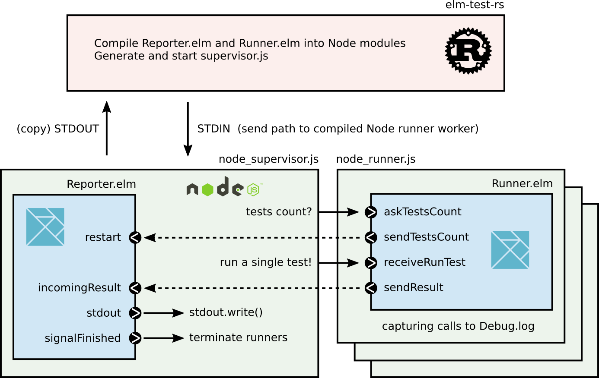

I am pleased to announce the release of version 1.0.0 of elm-test-rs, a fast and portable executable to run your Elm tests! A special thanks to @harrysarson as well as to all other people who contributed their time to this project!
Installation
You can install elm-test-rs globally simply by downloading the latest executable for your system and placing it in one of the directories in your PATH environment variable.
You can also install elm-test-rs locally for a project by adding it to your elm-tooling.json config file and running elm-tooling install.
You can install elm-test-rs in your CI, as well as elm and other tools with this GitHub action.
New features
Elm-test-rs has quite a few new features compared to elm-test. The two most interesting in my opinion are:
- Capturing calls to
Debug.logand reporting them in failure reports. - Being able to test your code with the lowest version bounds of your package dependencies to make sure they are correct.
(2) will make most sense to package authors and (1) was one of the most requested feature for elm-test. Here is an example output reporting in a failing test a call to Debug.log "The question was" question.
Running 1 tests. To reproduce these results later,
run elm-test-rs with --seed 2433154680 and --fuzz 100
↓ Question
✗ answer
43
╷
│ Expect.equal
╵
42
with debug logs:
The question was: "What is the Answer to the Ultimate Question of Life, The Universe, and Everything?"
TEST RUN FAILED
Duration: 2 ms
Passed: 0
Failed: 1
There are other features that may interest you. See the readme file.
Performances
Elm-test-rs is developed in a mix of Rust, Elm and JavaScript. The Rust part, which aims at generating the Elm code containing all your tests to run, usually takes only a few milliseconds. Most of the time is then spent either in the Elm compiler or in the Node process spawned to run the compiled tests. Since version 0.19.1-revision5, elm-test and elm-test-rs have the same strategy to gather your exposed tests. As such their performances are very similar. Comparing on a few well-known packages, I get the following execution times, averaged over 100 runs.
| test runner | empty app | list-extra (189 tests) | elm-color (8963 tests) |
|---|---|---|---|
| elm-test (rev 6) | 0.56s | 0.74s | 2.2 s |
| elm-test-rs | 0.45s | 0.75s | 2.7 s |
As you can see, both have very similar performances, with a slight advantage to elm-test for huge tests suites. This is mostly due to a design decision enabling the capture of Debug.log which increases the amount of messages between the Node supervisor and its runners. Another user reported faster execution times with elm-test-rs so I guess it eventually depends on the shape of your tests suite.
Breaking changes
Elm-test and elm-test-rs have very similar outputs and behaviors for the most part. However, there are two changes that may break your tests:
- elm-test-rs does not automatically prepend a description with the module name to your tests;
- elm-test-rs expects paths and globs leading to elm files, while elm-test also accepts directories.
To fix (2) in your workflow, you can usually replace path/to/dir by path/to/dir/**/*.elm as arguments. To fix (1) for your tests, you can usually transform
TestModule exposing (a, b, c)
into
TestModule exposing (tests)
tests = describe "TestModule" [ a, b, c ]
The reasons for (1) are detailed in an issue on GitHub.
Code architecture
The code of elm-test-rs is designed with the objective of being
- as simple and lightweight as reasonably possible;
- modular;
- well documented.
It is split in three parts, each of them being replaceable.
- The CLI, a Rust application that generates all the needed JS and Elm files to run tests.
- The supervisor, a small Node JS script (roughly 100 lines, with no dependency other than Node itself) tasked to spawn runners (Elm), start a reporter (Elm) and transfer tests results from the runners to the reporter.
- An Elm package (
mpizenberg/elm-test-runner) exposing a main program for a runner and another one for a reporter.

Future contributions and improvements
I am very happy with what elm-test-rs turned out to be but there are still many improvements that could be made, such as better support of Debug.log in fuzz tests, improving performances of runners work distribution, a Deno or Browser supervisor, and many more. Don’t hesitate to have a look at the already existing issues or to open new ones!
Personally, I am super happy that elm-test-rs will enable a better student experience for the incoming v3 of the exercism learning platform. I hope you are also excited by this new release of elm-test-rs, bringing us one step closer to an ecosystem where we don’t need JavaScript to enjoy Elm!